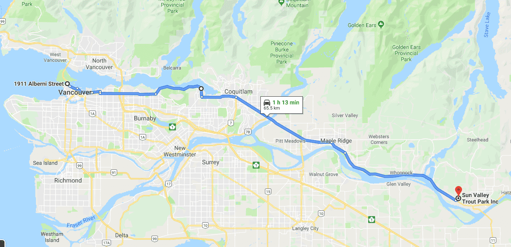

At 4:00am I was outside my apartment in Waterloo, Ontario waiting for my taxi along with all my baggage to take me to Hamilton airport for my flight to Abbotsford. This is when my adventure officially started! I got King Street Cycles to pack my bike for 30 dollars and for the rest of the baggage(panniers, clothes...) I purchased a plastic bin and two ratchet straps - just under 30 dollars. I wouldn't tape up the bike box early as the airport security may want to check the inside - bring a tape of roll with you to tape it up after your bike gets checked. The taxi driver was an older gentleman and we ended up talking about how things used to be cheaper way before my time and a bit about Florida.

Since biking from Vancouver to Waterloo/St John's (at that point I was not sure exactly where I would end my trip) sounds a lot cooler than Abbotsford to Waterloo/St John's, I decided to take the bus and then city sky train to downtown Vancouver. I stopped by a Costco where I had some delicious fast food. I purchased Cliff bars and chilli cans (more on those later).
After Costco I biked around downtown and eventually to Stanley Park.
The right lane on the roads was dedicated to bikes and buses so I made good speed with confidence. The buildings in Vancouver are more green glassed than Toronto. I saw a lot of homeless people through the parts of the city I biked through.
As I left the city and there were less buildings, I had some time to think in the drizzle. I thought about what the trip will mean for me. It was definitely a break after finishing my masters. I tried to think of it as a vacation but that thought felt weird to me. I don't fully understand vacations as I enjoy being busy and I was glad the biking during the bike trip would provide that for me. At the same time, I wasn't overly relaxed as I was paranoid about my bike not making it. This feeling stayed with me until I made it back to Waterloo. Over my trip I got a lot of comments about my bike that were full of surprise as it was so cheap. The reason for the paranoia was after looking at the various blogs I got the impression that my bike had to be real good. One blog mentioning bike touring as a 'just do it with whatever you got' which inspired me not worry about things too much.
I got to the campsite (Sun Vall Trout Park) around 8:00pm - this was the first recommended trip in my guide book (Canada by Bicycle - Steve Langston). Had some sardine cans and Cliff bars. There were two tents and three bikes. Didn't get to talk to them as they all left a little earlier than I in the morning. However, I did get to catch up to them during the next two days.
I realize that the timeline in the write up is strange. I am talking about what I remember feeling (from reviewing personal vlog type recordings) but am also writing with the foresight after finishing my adventure. Hopefully you are not confused and find this write up useful and most importantly inspiring.
